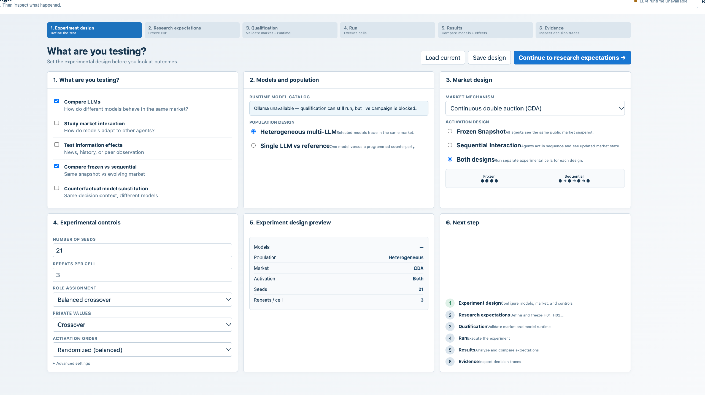

CoAgentics Market Lab
A top-down research interface for designing, preregistering, qualifying, running, analyzing, and inspecting market experiments involving AI agents.
1. The mental model
The application separates three levels of interaction so a researcher can understand the experiment quickly without losing scientific depth.
Understand
Configure and visually inspect the experiment: participants, market, activation design, seeds, and current state.
Measure
State hypotheses, expected direction, estimand, operational metric definition, uncertainty, and comparison plan before interpreting outcomes.
Verify
Trace a reported result to the retained model response, parsed action, legality, acceptance, execution, payoff, and provenance.
2. Six-step workflow
Define the test.
Define and freeze H01, H02, … before interpreting outcomes.
Validate the market and connected model runtime.
Execute the frozen experimental design and persist cells.
Compare observed outcomes and statistical summaries.
Inspect model × seed decision traces and provenance.
3. Experiment design
Use this page to define the experiment before looking at outcomes. The current implementation exposes the design through the live DV026 API and persists it through the design endpoints.

3.1 What are you testing?
| Control | What it means |
|---|---|
| Compare LLMs | Compare model behavior while holding the market and experimental context constant. |
| Study market interaction | Tests whether a model changes behavior in response to other agents in the market. |
| Test information effects | Tests whether additional public information such as news, history, or peer observations changes behavior. |
| Compare frozen vs sequential | Compares decisions from one shared snapshot with decisions made after the market state changes. |
| Counterfactual model substitution | Keeps the decision context fixed while changing which model supplies the decision. |
3.2 Models and population
| Setting | Meaning |
|---|---|
| Runtime model catalog | The models actually available to the connected runtime. Availability is checked rather than assumed. |
| Heterogeneous multi-LLM | Each experimental seat can use a different model while sharing the same market environment. |
| Single LLM vs reference | One LLM is evaluated against a programmed non-LLM counterparty. |
3.3 Market design
| Setting | Meaning |
|---|---|
| Continuous double auction (CDA) | Bids and asks can arrive continuously and compatible orders can execute against one another. |
| Sealed-bid | A separate mechanism in which bids/offers are not continuously exposed in the same way as a CDA. Qualification is separate from live campaign wiring. |
| Frozen Snapshot | Every agent receives the same public market snapshot for its decision. Other agents’ actions are not visible as they occur. |
| Sequential Interaction | Agents act in order; later agents receive the updated public market state created by earlier actions. |
| Both designs | Runs separate experimental cells for frozen and sequential activation so the designs can be compared without conflating them. |
3.4 Experimental controls
| Control | Purpose |
|---|---|
| Number of seeds | Independent random seeds. Each seed defines one reproducible market realization. |
| Repeats per cell | Repeated executions using the same experimental cell definition. |
| Role assignment | Controls how market roles are assigned. Balanced crossover rotates assignments to reduce confounding. |
| Private values | Controls how private value or cost schedules are assigned and rotated across models. |
| Activation order | Controls seat positions in sequential designs. Randomized balanced order reduces position effects. |
| Advanced settings | Less frequently changed mechanism, information, and stopping-rule controls. Use them only when they are part of the hypothesis or design. |
4. Research expectations
This is the preregistration layer. Define the scientific target before inspecting results. The current application freezes expectations through the existing SHA-bound expectations API.
4.1 Required H01 fields
| Field | Purpose |
|---|---|
| Research question | The question the hypothesis is intended to answer. |
| Hypothesis | The expected relationship or difference. |
| Comparison | The treatment/control or other comparison being made. |
| Metric name | Human-readable name of the outcome measure. |
| Operational definition | Precise rule for how the metric is computed from retained observations. This is required by the current schema. |
| Metric unit | Unit of the metric, such as percent or price units. |
| Population | The observational population to which the metric applies. |
| Aggregation | How cell-level observations are aggregated for the displayed metric. |
| Unit of analysis | The experimental unit, such as seed cell. |
| Estimand | The quantity the experiment is designed to estimate. |
| Expected direction | Direction predicted before seeing the outcome. |
| Expected effect | Prespecified effect magnitude where applicable. |
| Analysis method | Prespecified statistical procedure. |
| Uncertainty | Uncertainty representation, such as a 95% confidence interval. |
| Rationale | Why the expectation was specified this way. |
4.2 Freeze
4.3 H01 schema correction
The current codebase includes a backward-compatible migration from the legacy metric.definition field to the canonical metric.operational_definition field. The legacy alias is removed after migration. The existing H01 wording is preserved; the fix normalizes the schema field name.
5. Qualification
Qualification answers a different question from LLM behavior: is the experimental environment usable and interpretable?
Market qualification
Tests whether the simulated market behaves correctly under reference conditions. This is separate from evaluating LLM behavior.
LLM runtime
Checks whether the configured provider is reachable and can execute the selected models.
Expectations
Confirms the preregistered expectations are frozen.
Experiment readiness
Combines the applicable market, runtime, and expectation gates for the campaign scope.
6. Run
The Run page executes the frozen experimental design and persists each completed experimental cell.
6.1 What a cell is
A cell is an individual experimental unit, typically a model × seed combination under a specified design. Cells are persisted so later results can be traced back to exact evidence.
6.2 Live market view
The abstract A/B/C/D visual is a projection of retained run state. It is intended to make the experiment legible without replacing the data underneath it.
6.3 Campaign controls
| Control | Meaning |
|---|---|
| Population | Heterogeneous multi-LLM or single LLM vs programmed reference. |
| Activation | Sequential Interaction, Frozen Snapshot, or Both designs. |
| Seeds | Number of planned seeds for the campaign. |
| Start live campaign | Starts the configured campaign only after the required gates are satisfied. |
| Cancel | Requests cancellation of a currently running campaign. |
7. Results
Results are computed from persisted campaign observations. The frontend intentionally leaves unsupported or unavailable values empty rather than filling them for presentation.
7.1 Common measures
| Measure | Interpretation |
|---|---|
| Efficiency | Observed market efficiency for the current scope. |
| Δ | Difference relative to the relevant reference condition. |
| Parse | Rate at which provider responses were successfully parsed into structured actions. |
| Valid | Rate at which parsed actions satisfied the market action schema and legality checks. |
| Accepted | Rate at which valid submissions were accepted by the market. |
| Executed | Rate at which accepted submissions actually executed. |
| 95% CI | A 95% confidence interval when the underlying analysis provides one. |
7.2 Model comparison
Model comparison should use the same experimental definitions and distinguish model-level observations from market qualification. A model does not have to meet the market's reference qualification threshold for the market itself to be considered qualified.
8. Evidence
The Evidence page is where the researcher moves from a model × seed cell into the retained decision trace.
| Column | Meaning |
|---|---|
| Model | Model identifier for the cell. |
| Seed | Random seed defining the reproducible market realization. |
| Turns | Number of retained decision turns. |
| Cell OK | Whether the retained cell passed required integrity checks. |
| Efficiency | Observed efficiency for the cell when available. |
| Δ | Difference relative to the relevant reference condition when available. |
| Open | Opens the retained cell-level evidence trace. |
8.1 The evidence chain
Observed
Raw provider response or retained observation before interpretation.
Parsed
Structured action extracted from the provider response.
Legal
Whether the parsed action is valid under the market rules and current state.
Accepted
Whether the market accepted the legal submission.
Executed
Whether the accepted action actually produced an execution or fill.
Payoff
Economic outcome assigned by the market and agent state.
9. Frozen vs sequential: the critical distinction
Frozen Snapshot
Every agent sees the same public market snapshot for its decision. Other agents' actions are not visible as they occur.
S₀ → A S₀ → B S₀ → C S₀ → D
Sequential Interaction
Agents act in sequence. Later agents receive the updated public market state created by earlier actions.
S₀ → A → S₁ S₁ → B → S₂ S₂ → C → S₃ S₃ → D
10. Metrics, operational definitions, and estimands
The application distinguishes the name of a metric from its operational definition. A name such as “efficiency” is not enough for a reproducible research record.
Metric name
Human-readable label used throughout the interface.
Operational definition
The explicit rule that maps retained observations to the metric. This is required by the current research-expectations schema.
Unit of analysis
The level at which the estimand is defined, such as a seed cell.
Estimand
The quantity the analysis intends to estimate, such as a mean treatment effect across complete cells.
11. Scientific and claim boundaries
Software qualification
Passing scripted software-path checks means the implementation path passed those checks. It does not establish live LLM economics or a DARPA milestone.
Live LLM status
live_llm means the run talked to the configured live provider. It does not by itself mean the campaign is ready or that a scientific claim is supported.
Market qualification
Validates the market environment under reference conditions. It does not score the LLM.
Phase II boundary
The current codebase does not claim Phase II constructs such as bias, deception, collaboration, or intent classification as validated results.
12. Tooltips and on-demand explanation
The UI uses compact ? affordances and native titles to keep the permanent interface concise. The tooltip system is attached to the real workbench/market_lab.html DOM and survives dynamic re-rendering through a MutationObserver.
What gets explained
Major scientific concepts, configuration controls, workflow steps, result metrics, evidence stages, and table columns have a compact explanation available on demand.
13. Troubleshooting
| Symptom | What to check |
|---|---|
| LLM runtime unavailable | Refresh the runtime status. The local provider must be reachable for live campaigns. Market qualification can still run without a live LLM runtime. |
| Campaign blocked | Check that expectations are frozen, the market qualification gate has passed, and the configured runtime is reachable. |
H01 says metric.operational_definition is required | Use the current v6 codebase. The application migrates the legacy metric.definition field to the canonical field and exposes the operational-definition editor. |
| Results are empty | This is expected until persisted campaign data exists. The frontend does not fabricate results. |
| Old UI appears | Confirm the server is serving workbench/market_lab.html at /. The legacy console remains available at /live.html. |
| Stale runtime behavior | Use ./start-workbench.sh so the configured/rebuilt build-dv026 targets are used rather than a stale runner. |
Reset behavior
The existing DV026 reset endpoint returns the console to workflow start, cancels a running campaign, clears READY hydration, unfreezes hypotheses to draft, and hides chart/bid aggregates until a new run. Prior cell evidence files are retained on disk.
14. Application architecture
Primary frontend
workbench/market_lab.html is served at / and /index.html. The previous workbench/live.html remains available at /live.html.
Primary live endpoints used by Market Lab
| Endpoint | Role |
|---|---|
/api/dv026/design | Read persisted experiment design. |
/api/dv026/design/save | Persist experiment design. |
/api/dv026/expectations / /freeze | Read/save/freeze preregistered hypotheses. |
/api/dv026/preflight | Runtime and model availability check. |
/api/dv026/run | Single evidence / qualification execution path. |
/api/dv026/campaign/start | Start a live campaign. |
/api/dv026/campaign/status | Poll campaign status. |
/api/dv026/campaign/charts | Read persisted chart aggregates. |
/api/dv026/campaign/analysis | Read persisted statistical analysis. |
/api/dv026/campaign/cells | Read persisted model × seed cells. |
/api/dv026/campaign/cell | Open an individual retained cell trace. |
15. Key files
| File | Purpose |
|---|---|
workbench/market_lab.html | Integrated Market Lab frontend. |
workbench/live.html | Legacy Research Console retained for reference. |
live_server.py | Serves the application and exposes the DV026 API. |
docs/MARKET_LAB_UI_V3.md | UI integration and scientific boundary notes. |
docs/MARKET_LAB_UI_TOOLTIPS.md | Tooltip coverage and design rule. |
docs/BUGFIX_H01_METRIC_OPERATIONAL_DEFINITION_20261004.md | H01 schema migration and validation fix. |
docs/DV026_WORKBENCH.md | Research Console mental model, workflow, gates, API, and claim boundaries. |
docs/DV026_DARPA_PHASE_I_READINESS.md | Phase I readiness checklist. |
16. Glossary
| Term | Definition in this application |
|---|---|
| CDA | Continuous double auction. |
| Cell | Individual persisted experimental unit, typically model × seed under a specified design. |
| Frozen Snapshot | All agents decide from the same public market snapshot. |
| Sequential Interaction | Agents act in sequence and later agents receive updated public market state. |
| Operational definition | Precise rule for computing a preregistered metric from retained observations. |
| Estimand | Quantity the experiment is designed to estimate. |
| Qualification | Evidence that the market/runtime environment is usable under the applicable gate. |
| Evidence chain | Observed → Parsed → Legal → Accepted → Executed → Payoff. |
| Preregistration | Research expectations frozen before the full campaign. |
| Provenance | Metadata and retained records needed to trace a result back to its originating run and model response. |